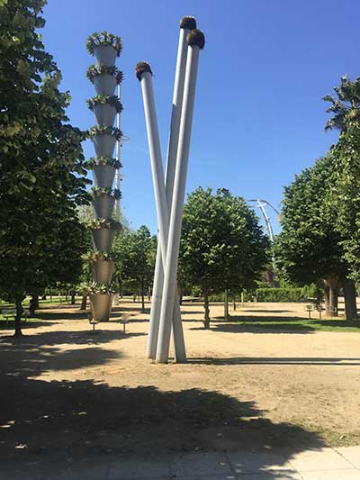

Aire Pur
Parc central del Poblenou

Són més de cinc hectàrees de verd, on predomina la vegetació autòctona mediterrània, que comparteix espai amb àrees temàtiques i amb una obra de l'arquitecte francès Jean Nouvel. Només arribar-hi, es pot veure que el seu perímetre està aïllat de l'exterior per una tanca d'arbustos i on la vegetació és la gran protagonista d'aquest parc on predomina la mediterrània.